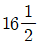
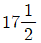
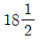
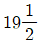
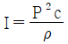
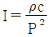
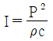
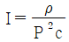
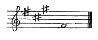

피아노조율산업기사 (2008-05-11 기출문제)
1과목: 임의 구분
1. 피아노 선의 지름 1.100±0.013mm 는 몇 번 선에 해당하는가?




(정답률: 알수없음)

2. 흑건의 윗면과 밑면의 폭(mm)을 가장 옳게 나타낸 것은?
- 윗면 : 8.0 ~ 9.5, 밑면 : 9.0 ~ 10.5
- 윗면 : 9.0 ~ 10.5, 밑면 : 11.0 ~ 12.5
- 윗면 : 11.0 ~ 12.5, 밑면 : 13.0 ~ 14.5
- 윗면 : 13.0 ~ 14.5, 밑면 : 15.0 ~ 16.5
(정답률: 알수없음)
3. 다음 중 향판의 특성이라고 볼 수 없는 것은?
- 진동의 지속
- 음의 확대
- 음의 합성
- 고·저음 분리
(정답률: 알수없음)
4. 소스테누토(sostenuto) 페달에 대한 설명 중 옳은 것은?
- 반드시 소스테누토 페달을 밟고 건반을 눌러야 그 기능이 발휘된다.
- 반드시 댐퍼 페달과 소스테누토 페달을 함께 밟아야 한다.
- 반드시 소프트 페달과 소스테누토 페달을 함께 밟아야 한다.
- 반드시 건반을 누른 후 소스테누토 페달을 밟아야 그 기능이 발휘된다.
(정답률: 알수없음)
5. 건반의 규격에 대한 설명 중 틀린 것은?
- 건반의 눌림 깊이는 9.0 ~ 11.0mm 이다.
- 건반의 하강하중은 0.39 ~ 0.74N 이다.
- 건방의 상승하중은 0.065 ~ 0.098N 이다.
- 건반의 총폭은 88건일 경우 1220 ~ 1230mm 이다.
(정답률: 알수없음)
6. 다음 중 피아노를 최적의 상태로 보관할 때 가장 적합한 환경 조건은?
- 온도 : 17 ~ 20℃, 습도 : 50 ~ 60%
- 온도 : 25 ~ 35℃, 습도 : 50 ~ 60%
- 온도 : 17 ~ 20℃, 습도 : 70 ~ 80%
- 온도 : 25 ~ 35℃, 습도 : 70 ~ 80%
(정답률: 알수없음)
7. 향판에 크라운을 보강하여 현의 압력에 대항하는 주요 역할을 하는 것은?
- 향봉(Ribs)
- 브릿지(Bridges)
- 위펜(Wippen)
- 잭레일(Jack Rail)
(정답률: 알수없음)
8. 음향판과 브릿지에 관한 설명으로 옳은 것은?
- 저음부 음향판의 두께는 9 ~ 10mm 이다.
- 고음부 음향판의 두께는 6 ~ 7mm 이다.
- 저음 브릿지는 브릿지의 접착위치를 가급적 향판의 중앙에 이치하도록 서스펜딩 시스템 구조로 한다.
- 브릿지의 재질로서는 스프루스가 가장 좋다.
(정답률: 알수없음)
9. 그랜드 피아노에 주로 이용되는 것으로 재료는 황동을 사용하고, 선이 통과하는 구멍이 있으며 구멍 내면은 둥글게 하고 있어 선이 잘 미끄러지게 설계되어 있는 것은?
- 베어링핀(Bearing pin)
- 아그라프(Agraffe)
- 힛치핀(Hitch Pin)
- 튜닝포크(Tuning fork)
(정답률: 알수없음)
10. 다음 중 튜닝핀의 지름을 옳게 나타낸 것은?
- 0.75 ~ 1.25mm
- 2.75 ~ 3.25mm
- 4.75 ~ 5.25mm
- 6.75 ~ 7.25mm
(정답률: 알수없음)
11. A37 음이 220Hz 일 때 6도 아래의 C28 음과의 맥놀이는 몇 회인가? (단, C28의 진동수는 130.8Hz 이다.)
- 6
- 7
- 8
- 9
(정답률: 알수없음)
12. D#31에서 위로 4도인 G#36 의 맥놀이는 몇 회인가? (단, D#31의 진동수는 155.56Hz, G#36의 진동수는 207.65Hz 이다.)
- 0.71
- 0.81
- 31.38
- 52.80
(정답률: 알수없음)
13. 평균율에 있어서 1옥타트 중 기음에서 아래로 4도, 위로 5도로 했을 때 맥놀이의 비는?
- 1 : 1
- 1 : 2
- 1 : 3
- 1 : 4
(정답률: 알수없음)
14. 다음 음정의 온음과 반음의 수를 옳게 나타낸 것은?
- 장3도 : 온음 1개, 반음 1개
- 완전5도 : 온음 2개, 반음 1개
- 장6도 : 온음 3개, 반음 2개
- 완전8도 : 온음 5개, 반음 2개
(정답률: 알수없음)
15. 진동수가 다른 두 음파의 간섭에 의해 생기는 합성파의 주기적 변화를 무엇이라고 하는가?
- Masking
- Cent
- Beats
- Pitch
(정답률: 알수없음)
16. 거짓맥놀이의 주된 발생 원인이 아닌 것은?
- 현의 진동부분의 이상으로 발생하는 경우
- 현이 브리지에 밀착되지 않은 경우
- 브르지 위에서의 베어링 각도의 불량
- 장현시 장갑을 착용하였을 경우
(정답률: 알수없음)
17. 완전4도 조율에서 G35와 C40의 맥놀이를 옳게 나타낸 것은? (단, G35의 진동수는 195.997Hz이고, C40의 진동수는 261.625Hz 이다.)
- 협음정 0.89
- 광음정 0.89
- 협음정 0.99
- 광음정 0.99
(정답률: 알수없음)
18. 평균율에 있어서 4도, 5도, 장3도, 장6도 음정은 순정율보다 몇 센트 차이가 나는가?
- 4도 : +2, 5도 : -2, 장3도 : +14, 장6도 : +16
- 4도 : -2, 5도 : +2, 장3도 : +4, 장6도 : +6
- 4도 : -2, 5도 : +2, 장3도 : +14, 장6도 : +16
- 4도 : +2, 5도 : -2, 장3도 : +4, 장6도 : +6
(정답률: 알수없음)
19. 다음 중 피아노 조율용 공구가 아닌 것은?
- 튜닝해머(Tuning hammer)
- 소리굽쇠(Tuning fork)
- 웨지(Wedge, Mute)
- 키플라이어(Key pliers)
(정답률: 알수없음)
20. 신토닉 콤마(syntonic comma)에 대하여 가장 옳게 나타낸 것은?
- 피타고라스 콤마와 디디마스 콤마의 차
- 피타고라스 5도와 순정 장3도와의 차
- 피타고라스 5도와 순정 5도와의 차
- 피타고라스 장3도와 순정 장3도와의 차
(정답률: 알수없음)
2과목: 임의 구분
21. 다음 중에서 음악연주시 음향판을 설치하여 무대를 좁게 하는 가장 큰 이유는?
- 악기소리를 작게 하기 위하여
- 잡음을 막기 위하여
- 시각적으로 좋은 분위기를 만들어 음악감상이 잘 되게 하기 위하여
- 음이 과다하게 확산되는 것을 막기 위하여
(정답률: 알수없음)
22. 현과 주파수의 상관관계에 대한 설명 중 옳은 것은?
- 현의 장력이 커지면 주파수는 감소한다.
- 현의 길이가 증가하면 주파수는 증가한다.
- 현의 질량이 커지면 주파수는 감소한다.
- 현의 지름이 굵어지면 주파수는 증가한다.
(정답률: 알수없음)
23. 회절현상에 대한 설명 중 틀린 것은?
- 파장이 짧을수록 회절하기 쉽다.
- 물체가 작을수록 회절하기 쉽다.
- 낮은 주파수는 고주파음에 비하여 회절하기 쉽다.
- 물체 바로 뒤에는 음향(shadow zone)이 잘 생기지 않는다.
(정답률: 알수없음)
24. 음악홀의 잔향 시간에 관한 설명 중 옳은 것은?
- 같은 건축조건에서 홀의 크기는 잔향시간과 관계 없다.
- 잔향시간은 500Hz 기준일 때 3~4초 정도가 적합하다.
- 잔향시간이 길어지면 명확성은 희생되지만 음색의 충만성이 길어 낭만파 음악 연주에 도움이 된다.
- 계단을 경사지게 하는 것은 잔향시간과는 관계가 없다.
(정답률: 알수없음)
25. 다음 중 완전협화 음정이 아닌 것은?
- 완전4도
- 완전5도
- 완전8도
- 장3도
(정답률: 알수없음)
26. 해머헤드를 정음법 중에서 중·고음부의 소리를 조금 강하게 하기 위하여 경화제를 투여하는 방법을 무엇이라고 하는가?
- 파일링(Filing)
- 도우핑(Doping)
- 니들링(Needling)
- 보이싱(Voicing)
(정답률: 알수없음)
27. 다음 중 소리의 세기를 구하는 식으로 옳은 것은? (단, I : 소리세기, P : 음압의 실효치, ρ : 매질의 밀도, c : 음속)




(정답률: 알수없음)
28. 인간이 물리적으로 일정한 강도에서 가장 강하게 느껴지는 음은 몇 Hz 정도인가?
- 30
- 200
- 440
- 3000
(정답률: 알수없음)
29. 다음 중 음의 전달속도가 가장 빠른 것은?
- 공기 14℃(비중 0.000126)
- 물 13℃(비중 1.4)
- 유리(비중 2.4)
- 고무(비중 0.95 ~ 1.1)
(정답률: 알수없음)
30. 다음 중 악음(musical sound)에 속하지 않는 것은?
- 현악기 소리
- 소리굽쇠 소리
- 타악기 소리
- 관악기 소리
(정답률: 알수없음)
31. 음의 파장이 10cm 이면 주파수는 몇 Hz 인가? (단, 음속은 340m/s 이다.)
- 34
- 340
- 3400
- 34000
(정답률: 알수없음)
32. 피아노 방의 가구, 집기, 의복 등은 어느 음역을 가장 잘 흡수하는가?
- 고음역
- 중음역
- 저음역
- 최저음역
(정답률: 알수없음)
33. 피아노 해머는 오래 사용할수록 접촉 부근이 굳어짐에 따라 음색은 어떻게 변하는가?
- 소리가 부드러워진다.
- 배음이 전혀나지 않는다.
- 부분적으로 배음이 약해진다.
- 부분적으로 배음이 원음보다 강해진다.
(정답률: 알수없음)
34. 청각기관에 대한 다음 설명 중 옳은 것은?
- 인간은 모든 가청주파수 대역에 대하여 균일한 감각으로 소리를 들을 수 있다.
- 내이에 전달된 진동은 기저막의 작용에 의해 소리의 크기와 주파수가 전기적인 신호로 바뀐다.
- 귀의 외이(外耳)는 소리를 균일하게 잘 들리도록 하는 작용만을 한다.
- 기저막은 집음기의 역할을 한다.
(정답률: 알수없음)
35. 음폐효과(masking effect)에 대한 설명 중 틀린 것은?
- 어떤 소리가 또 다른 소리를 들을 수 있는 능력을 감소시키는 현상을 말한다.
- 튜바의 음은 아무리 큰 음량이라도 높은 음역의 피콜로 음을 차폐시키기 어렵다.
- 음폐효과를 이용하여 소음을 음악으로 마스크 할 수 있다.
- 트럼펫은 거의 비슷한 높이의 클라리넷 음을 차폐시킬 수 없다.
(정답률: 알수없음)
36. 다음 중 단3화음에 대하여 가장 옳게 나타낸 것은?
- 단3도 + 장3도
- 장2도 + 단1도
- 장3도 + 장3도
- 단3도 + 단3도
(정답률: 알수없음)
37. 음색에 대한 설명 중 틀린 것은?
- 한 음이 갖는 자연스러운 빛깔을 의미한다.
- 발성체의 구조 및 재료에 따라 달라질 수 잇다.
- 음색은 음의 파형의 모양에 따라 다르다.
- 같은 높이의 음은 음색도 같다.
(정답률: 알수없음)
38. 높이가 다른 음이 동시에 울리는 것을 무엇이라고 하는가?
- 리듬
- 멜로디
- 하모니
- 음정
(정답률: 알수없음)
39. 일종의 공명기로서 약 2kHz 소리를 약간 증폭시켜 고막을 진동시키는 역할을 하는 기관은?
- 외이도
- 망치뼈
- 모루뼈
- 등자뼈
(정답률: 알수없음)
40. 다음은 무슨 조의 으뜸음인가?

- 사장조
- 가단조
- 바단조
- 올림바단조
(정답률: 알수없음)
3과목: 임의 구분
41. 밸런스 레일 스터드 조정 작업에 대한 설명 중 옳은 것은?
- 저음쪽과 고음쪽의 두 곳은 필이 밀착해야 하고 중앙 부분은 약간 떠 있게 조정한다.
- 스터드가 많이 돌출된 경우는 줄로 갈아낸다.
- 스크류와 맞닿는 부븐은 흑연 또는 파우더를 묻혀 준다.
- 스크류가 전체적으로 얕을 때에는 조정할 필요가 없다.
(정답률: 알수없음)
42. 일반적으로 해머드롭 거리는 해머접근 거리의 몇 배가 되도록 조정하는 것이 가장 바람직한가?
- 2
- 3
- 4
- 5
(정답률: 알수없음)
43. 백건반 앞면이 열쇠봉 상면에서 노출된 높이는 대략 몇 mm가 가장 적당한가?
- 35
- 30
- 20
- 15
(정답률: 알수없음)
44. 그랜드 피아노의 페달에서 잡음이 일어날 수 있는 원인으로 가장 거리가 먼 것은?
- 페달의 붓싱크로스 마모
- 페달상자와의 마찰
- 페달스프링의 상하 마찰
- 댐퍼펠트가 눌러져 있는 경우
(정답률: 알수없음)
45. 그랜드 피아노의 소스테누토 페달에 관한 설명 중 옳은 것은?
- 소프트 페달과 비슷한 작동을 하는 페달이다.
- 댐퍼 페달과 같으나 조금만 울리게 하는 페달이다.
- 연주시 어느 특정 음을 지속시키면서 다른 음들을 스타카토로 연주할 수 있는 페달이다.
- 전체 음이 나게 하고 협화하는 음만 울리게 하며, 조율연습 때에만 사용하는 페달이다.
(정답률: 알수없음)
46. 그랜드 피아노 해머생크(hammer shank)가 우측으로 비스듬히 진행할 때 가장 적합한 수리 방법은?
- 생크 플랜지 안쪽 좌측면에 종이 패킹을 고여 준다.
- 생크 플랜지 안쪽 우측면에 종이 패킹일 고여 준다.
- 해머 생크 플라이어로 가열하여 휘어 준다.
- 해머를 뽑은 후 수정하여 꽂는다.
(정답률: 알수없음)
47. 건반이 밸런스 핀 구멍 부위에서 부러졌을 때의 가장 적합한 수리 방법은?
- 건반 양면에 두꺼운 종이를 발라 놓는다.
- 건반 양면에 양철을 대서 못을 박는다.
- 부러진 부위 좌, 우 측면에 홈을 판 다음 얇은 나무판으로 접착시킨다.
- 건반 양면에 구부린 철사를 얽어 박는다.
(정답률: 알수없음)
48. 현에서 파생음(false beat)이 발생하는 것과 가장 거리가 먼 것은?
- 선의 노후
- 브릿지 핀의 흔들림
- 건반 부분의 마모
- 베어링 부분의 이상
(정답률: 알수없음)
49. 해머 니들링(needling)에 관한 사항 중 옳지 않은 것은?
- 니들링 후에는 파일링과 다림질도 필요하다.
- 바늘이 1개인 피커는 대부분 얕게 찌를 때 사용한다.
- 음색이 강한 해머는 니들링을 해야 한다.
- 신품 피아노는 많은 횟수의 니들링이 필요한 경우도 있다.
(정답률: 알수없음)
50. 그랜드 피아노 댐퍼 수리방법에 대한 설명 중 틀린 것은?
- 먼저 액숀을 피아노에서 빼내야 한다.
- 댐퍼레버 스프링의 강도를 맞춘다.
- 댐퍼와이어와 댐퍼우드가 직각인지 확인한다.
- 댐퍼펠트와 현이 수평이 되도록 맞춘다.
(정답률: 알수없음)
51. 그랜드 피아노의 해서스톱 표준거리는 어느 정도가 가장 적당한가?
- 10±1mm
- 14±1mm
- 18±1mm
- 22±1mm
(정답률: 알수없음)
52. 백건반 앞면과 열쇠봉사이는 어느 정도가 가장 적당한가?
- 4.5 ~ 5mm
- 3.5 ~ 4mm
- 2.5 ~ 3mm
- 1.5 ~ 2mm
(정답률: 알수없음)
53. 음향판과 향봉사이의 접착 부분에 사이가 떠 있을 때 가장 적합한 수리 방법은?
- 접착제를 틈사이에 칠하고 강하게 눌러준다.
- 향판과 향봉 틈사이에 종이나 크로스를 끼워준다.
- 향봉에서 향판쪽으로 굵은 나사못을 박아준다.
- 틈과 동일하게 스프루스 나무를 깎아 접착제를 칠한 후 때워주고 나사못을 향판에서 향봉쪽으로 박아준다.
(정답률: 알수없음)
54. 후론트 붓싱 클로스를 너무 깊게 접착했을 때 일어나는 현상으로 옳은 것은?
- 건반 작동이 원활하지 못하다.
- 건반무게가 가벼워진다.
- 아무런 변화가 없다.
- 건반 작동이 훨씬 더 용이해진다.
(정답률: 알수없음)
55. 조율을 하다가 점핑핀 현상이 나타났을 경우 가장 적절한 수리 방법은?
- 핀을 빼고 핀 구멍에 윤활유를 주입한 후 박는다.
- 핀 구멍에 이물질을 제거하고 나사산에 백묵을 칠한다.
- 핀을 망치로 조금 때려 박는다.
- 핀 구멍에 얇은 쐐기를 넣은 후 핀을 박는다.
(정답률: 알수없음)
56. 해머헤드의 파일링(filing)이란 어떤 작업인가?
- 해머헤드를 교환하는 작업
- 해머헤드를 타원형으로 성형하는 작업
- 해머헤드를 바늘로 찌르는 작업
- 해머헤드를 다림질하는 작업
(정답률: 알수없음)
57. 다음 중 애프터 터치의 양과 가장 밀접한 관련이 있는 것은?
- 건반깊이와 타현거리
- 건반높이와 타현거리
- 건반색상과 타현거리
- 해머스톱과 타현거리
(정답률: 알수없음)
58. 그랜드 피아노 페달 잡음 수리 방법에 대한 설명 중 옳지 않은 것은?
- 고무 붓싱이 닳아 소리가 날 때는 새 것으로 바꾼다.
- 페달 박스에서 소리가 날 때는 페달 버팀봉을 떼어 낸다.
- 페달봉 붓싱에서 소리가 날 때는 석필가루를 칠하거나 흑연을 칠한다.
- 스프링에서 소리가 날 때는 스프링을 빼내어 클로스를 감아준다.
(정답률: 알수없음)
59. 그랜드 피아노의 키스톱레일을 조정할 때 흑건우드 표면에서 레일까지의 거리로 가장 적당한 것은?
- 동일하게 조정
- 1mm 높게 조정
- 3mm 높게 조정
- 5mm 높게 조정
(정답률: 알수없음)
60. 그랜드 피아노의 댐퍼 스톱레버 조정에 대한 설명으로 가장 적합한 것은?
- 흑건반을 누르고 댐퍼를 살며서 들어올렸을 때 약 5~6mm 정도 상승하게 조정한다.
- 백건반을 누르고 댐퍼를 살며서 들어올렸을 때 약 5~6mm 정도 상승하게 조정한다.
- 백건반을 누르고 댐퍼를 살며서 들어올렸을 때 약 2.5~3mm 정도 상승하게 조정한다.
- 흑건반을 누르고 댐퍼를 살며서 들어올렸을 때 약 1~2mm 정도 상승하게 조정한다.
(정답률: 알수없음)